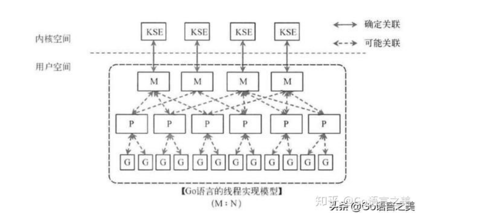

Go协程调度以及协程运行的问题
Go调度器，Goroutine是如何调度的，Go协程运行在用户态还是内核态？
这篇文章大概是要解决这几个问题，整理起来有点麻烦，其实前面的问题，大神们已经讲了很多了，我主要是碰到其中最后一个问题，这算是一道面试题，很有意思的面试问题，估计很少有人会深入考虑这个问题，嗯，其中也包括了我。。。
刚学习Goroutine时，就应该会看到一些文章说过，goroutine是非抢占式的，或者称之为协作式抢占调度，其运行在用户态。
如图：
M指的是Machine，一个M直接关联了一个物理内核线程，是真正干活的。由操作系统管理。
P指的是”processor”，代表了M所需的上下文环境，也是处理用户级代码逻辑的处理器。它负责衔接M和G的调度上下文，将等待执行的G与M对接，G的上下文和队列都在P上，离开P，G不能独立运行。
G指的是Goroutine，其实本质上也是一种轻量级的线程。包括了调用栈，重要的调度信息，例如channel等。
M代表OS线程。P代表Go代码执行时需要的资源。

P的数量由环境变量中的GOMAXPROCS决定，通常来说它是和核心数对应。
实际运行的M是有限的（始终保持有GOMAXPROCS个工作线程在干活）。
G是可以不断生成的，只要用户调用go，就检查当前M中的P，是否有可用的结构体G。如果有，则直接从中取一个，否则，需要分配一个新的结构体G。如果分配了新的G，需要将它挂到runtime的相关队列中。
要运行P时，调度器会试着寻找一个可用的M来绑定P，M少于GOMAXPROCS，将新建M。
也就是说M一直不会被休眠，它一直在运行，即使被阻塞，只要有需要，也会创建一个新的M。这样有M就可以一直消费G（在系统资源无限的情况下）。
系统调用
进入系统调用
某个G运行过程中，碰到某个系统调用阻塞，则M与P进行解绑（不阻塞不解绑），goroutine进入Gsyscall状态，让出CPU。
每个P中都挂了一个可执行的G的队列，如果这个队列不为空，即如果P中还有G需要执行，则让P与某个M绑定后立刻去执行，否则将P挂到idlep队列中。
系统调用完成
调度器检查当前m的P和它状态，如果P不空且状态为Psyscall(在非阻塞的系统调用P状态中只是被设置成Psyscall，不会将M与P进行解绑)，则说明是从一个非阻塞的系统调用中返回的，这时是仍然有CPU可用的。继续执行G就好了。否则，M时从阻塞的系统调用中返回的，M与P已经完成解绑了，需要检查是否有idle的P，有则与当前M绑定。
没有则挂到全局的就绪G队列中，然后停止当前m并调用schedule函数。
本文标题：Go协程调度以及协程运行的问题
文章作者：小师
发布时间：2020-06-16
最后更新：2022-05-04
原始链接：chunlife.top/2020/06/16/Go协程调度以及协程运行的问题/
版权声明：本站所有文章均采用知识共享署名4.0国际许可协议进行许可